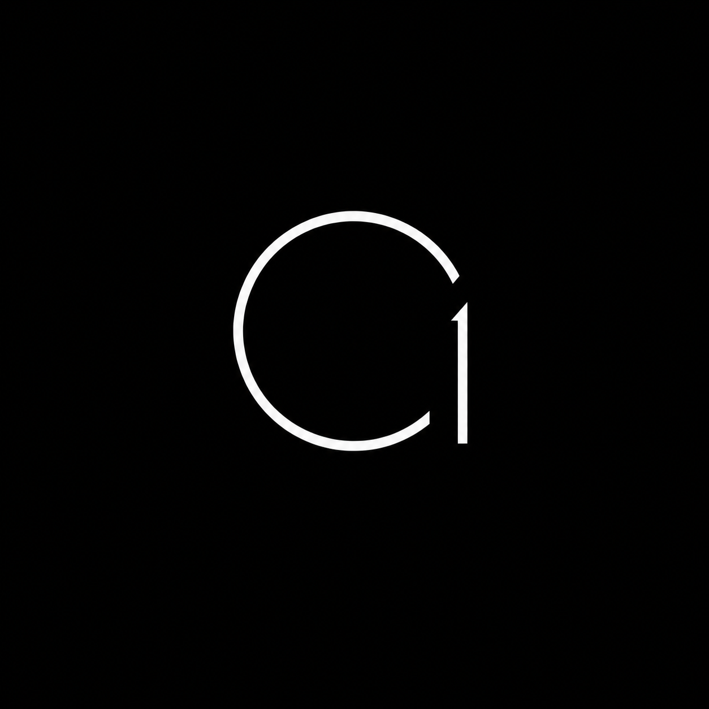

Continuum One is not a chatbot or productivity tool. It is an execution layer that converts human intent into structured action pipelines using AI reasoning, memory, and tool orchestration.
Instead of apps, you express intent. Continuum breaks it into steps, selects tools, executes, and returns results.
Software today requires navigation. Continuum removes navigation entirely. You no longer use apps — you state outcomes.
Continuum One is an early-stage AI operating system prototype redefining how humans interact with machines.
Enter SystemThe future of computing is not app-based. It is intent-based. Today, users: open apps navigate interfaces manually perform steps In Continuum’s vision: You express what you want — the system figures out how to do it. This shifts computing from interaction → execution.